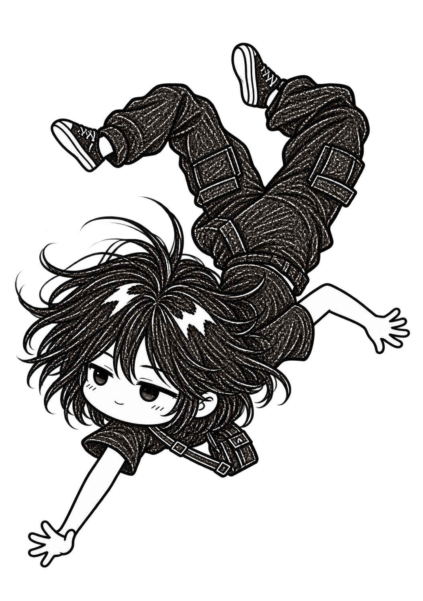

MOBİL UYGULAMA · 01
Yemekhane Mobil
Haftanın menüsü, tek bir yerde.

Haftanın menüsü, tek bir yerde.
Okumak için daha sakin bir alan.
Soru çözme ve kaydetme aracı
Python · PyQt5↗04Sade bir masaüstü metin editörü
Python · PyQt5↗05Etkileşimli bir kişilik testi
Python · PyQt5↗Balıkesir Üniversitesi’nde 4. sınıf bilgisayar mühendisliği öğrencisiyim. Kod ile tasarımın buluştuğu noktayı keşfetmekten keyif alıyorum.
Mobil, masaüstü ve web arasında geziniyorum. Günlük bir ihtiyacı, sade ve kullanışlı bir deneyime dönüştürmeyi seviyorum.